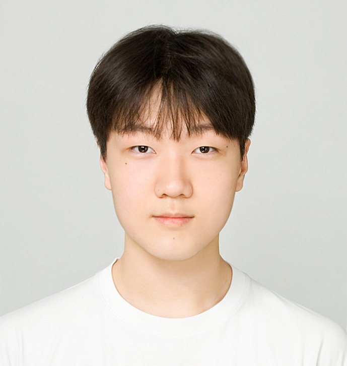

문제를 먼저 정의합니다.
기능보다 플레이어가 어떤 판단을 반복해야 하는지부터 잡습니다.
규칙과 시스템으로 세계를 설계합니다.
프로젝트보다 먼저, 어떤 문제를 보고 무엇을 중요하게 판단하는 사람인지 보여줍니다.
전투와 시스템을 중심으로 플레이어가 반복해서 마주할 판단을 정의하고, 이를 자원·상태·수치·레벨·UI로 구체화합니다. 기획 의도가 실제 플레이에서 어떻게 작동하는지까지 확인하기 위해 필요한 기능은 직접 구현합니다.

기능보다 플레이어가 어떤 판단을 반복해야 하는지부터 잡습니다.
의도를 수치·자원·상태·레벨·UI가 같은 방향을 가리키게 만듭니다.
구현 결과가 의도와 다르면 문서가 아니라 규칙을 다시 고칩니다.
게임소프트웨어전공 · 재학
XR · Digital Twin · UX 기획 및 발표 프로젝트
확정된 이력만 추가하는 영역입니다.
조직 자체보다 실제로 만든 프로젝트와 역할을 중심으로 정리했습니다.
팀장 · 게임 기획 · 시스템 구현 · UI
팀장 · 전투/시스템 기획 · 게임플레이 구현
제품 기획 · 데스크톱 UX · 개발
제품 기획 · 영화 라이브러리/디스커버리 · 웹 개발
타워디펜스 · 준비/전투 전략 루프
세계관 · 세력 · 선택 구조
카드에서는 작품의 인상만 보고, 상세 페이지에서 설계 과정과 결과를 읽습니다.
프로젝트를 만들며 바뀐 판단, 시행착오, 설계 이유를 글로 남깁니다.